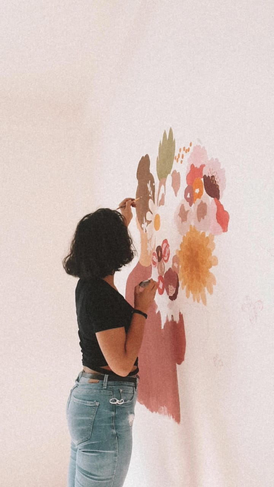

Art Lives on Every Wall
Based in Beirut, I Leaf Art brings communities together through mural art, creative expression, and collaboration. Every wall tells a story as we partner with artists, children, volunteers, schools, and families to transform overlooked spaces into lasting symbols of hope, identity, culture, and connection across Lebanon.
Color With a Purpose
Every mural we paint tells a story — of the artists behind it and the community it lifts. Here's what we've built together.
Walls We've Brought to Life
A glimpse of recent murals created with local artists and neighborhoods across Lebanon.

More Than Paint on a Wall
We believe public art is a public good. A mural can reclaim a neglected corner, spark conversation, and give a neighborhood a renewed sense of identity and belonging.
I Leaf Art collaborates directly with local artists, volunteers, children, schools, and families so that every project reflects the community it lives in. We run school and youth workshops and design each mural together with the people of the neighborhood.
From Beirut to the North and South of Lebanon, the result is art that doesn't just decorate a space — it helps people feel seen, connected, and proud of where they live.
Read Our Mission